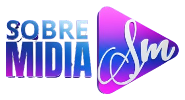

<!doctype html>
<html lang="pt-BR">
<head><meta charset="utf-8"><title>Logo Sobre Mídia — realce</title>
<link href="https://fonts.googleapis.com/css2?family=Anton&family=Catamaran:wght@800&display=block" rel="stylesheet">
<style>
  body { margin: 0; background: #1b1b22; color: #ccc; font: 13px system-ui; padding: 12px; }
  .linha { display: flex; gap: 12px; flex-wrap: wrap; margin-bottom: 12px; }
  .c { padding: 10px; border-radius: 10px; } .e { background: #0b0f2a; } .cl { background: #f4f4f7; }
  canvas, img { display: block; width: 766px; height: 414px; }
</style></head>
<body>
<div class="linha" id="raiz"></div>
<script>
// Realce da logo ORIGINAL (383x207): mesmas formas e cores, só com qualidade.
//  - contorno de cada parte (nome, botão, "Sm") tirado da própria logo, ampliado e refeito liso (sem serrilhado);
//  - a franja escura/roxa que sobrava em volta de "SOBRE MIDIA" sai (ela não entra no contorno das letras);
//  - as cores de dentro de cada letra/botão são as da original ampliada, levadas até a borda nova.
const W0 = 383, H0 = 207;
const ORIG = new Image(); ORIG.src = 'original.png';
let px0; // pixels da original
let PERTO_DO_BRANCO; // pontos a até 3 px do "Sm" na original

const sm = (e0, e1, v) => { const t = Math.max(0, Math.min(1, (v - e0) / (e1 - e0))); return t * t * (3 - 2 * t); };
function canvas(w, h) { const c = document.createElement('canvas'); c.width = w; c.height = h; return c; }

// peso (0..1) de cada ponto da original para uma parte
const PARTES = {
  // letras: tudo que é colorido o bastante, à esquerda do botão (a franja escura fica de fora)
  nome: (x, y, r, g, b, a) => x < 197 ? (a / 255) * sm(92, 128, Math.max(r, g, b)) : 0,
  // miolo firme das letras: só os pontos bem coloridos e opacos (a franja e a borda misturada ficam de fora)
  nomeNucleo: (x, y, r, g, b, a) => x < 197 ? sm(200, 250, a) * sm(118, 140, Math.max(r, g, b)) : 0,
  // botão inteiro (triângulo com o "Sm")
  botao: (x, y, r, g, b, a) => x >= 197 ? sm(100, 200, a) : 0,
  // miolo das cores do botão: o degradê sem a borda do triângulo e sem o "Sm" e a sombra dele (perto do branco)
  // F-216: o botão é o ORIGINAL (3D): todas as cores dele, inclusive a borda 3D, só sem o "Sm" e a sombra dele
  botaoNucleo: (x, y, r, g, b, a) => x >= 197 && a > 235 && !PERTO_DO_BRANCO[y * W0 + x] ? 1 : 0,
  // miolo do "Sm": o branco firme, com o sombreado 3D dele
  smNucleo: (x, y, r, g, b, a) => (x >= 197 && PARTES.sm(x, y, r, g, b, a) > 0.75 ? 1 : 0),
  // "Sm": o branco de dentro do botão
  sm: (x, y, r, g, b, a) => {
    if (x < 197) return 0;
    const mn = Math.min(r, g, b), mx = Math.max(r, g, b);
    return (a / 255) * sm(150, 210, mn) * (1 - sm(40, 100, mx - mn));
  },
};

// máscara em alta resolução: peso na original → ampliação suave → leve desfoque → corte em degrau suave
function mascara(parte, k, corte = [0.42, 0.58], desfoque = 0.55) {
  const c0 = canvas(W0, H0), x0 = c0.getContext('2d'), im = x0.createImageData(W0, H0);
  for (let i = 0; i < W0 * H0; i++) {
    const x = i % W0, y = (i / W0) | 0, d = px0.data;
    const p = PARTES[parte](x, y, d[i * 4], d[i * 4 + 1], d[i * 4 + 2], d[i * 4 + 3]);
    im.data[i * 4] = im.data[i * 4 + 1] = im.data[i * 4 + 2] = 255; im.data[i * 4 + 3] = Math.round(p * 255);
  }
  x0.putImageData(im, 0, 0);
  const W = W0 * k, H = H0 * k;
  const c1 = canvas(W, H), x1 = c1.getContext('2d');
  x1.imageSmoothingEnabled = true; x1.imageSmoothingQuality = 'high';
  x1.filter = `blur(${desfoque * k}px)`;
  x1.drawImage(c0, 0, 0, W, H);
  const m = x1.getImageData(0, 0, W, H), out = new Float32Array(W * H);
  for (let i = 0; i < W * H; i++) out[i] = sm(corte[0], corte[1], m.data[i * 4 + 3] / 255);
  return out;
}

// cores da original ampliada, limpas: dentro da parte usa a cor ampliada; perto da borda, a cor do miolo estendida
function coresLimpas(k, miolo, raio = 2.2, exatoNoMiolo = true) {
  const W = W0 * k, H = H0 * k;
  const c = canvas(W, H), x = c.getContext('2d'); x.imageSmoothingEnabled = true; x.imageSmoothingQuality = 'high';
  x.drawImage(ORIG, 0, 0, W, H);
  const cor = x.getImageData(0, 0, W, H);
  // camada só com o miolo (alfa = miolo), desfocada: a cor desfocada já vem normalizada (cor média do miolo em volta)
  const a = canvas(W, H), xa = a.getContext('2d'), ia = xa.createImageData(W, H);
  for (let i = 0; i < W * H; i++) { ia.data[i * 4] = cor.data[i * 4]; ia.data[i * 4 + 1] = cor.data[i * 4 + 1]; ia.data[i * 4 + 2] = cor.data[i * 4 + 2]; ia.data[i * 4 + 3] = Math.round(miolo[i] * 255); }
  xa.putImageData(ia, 0, 0);
  // várias camadas, da mais larga para a mais fina: nenhum vazio fica sem cor (nada de buraco preto)
  const b = canvas(W, H), xb = b.getContext('2d');
  for (const rr of [raio * 8, raio * 3, raio]) { xb.filter = `blur(${rr * k}px)`; for (let n = 0; n < 3; n++) xb.drawImage(a, 0, 0); }
  const ib = xb.getImageData(0, 0, W, H);
  // dentro do miolo firme fica a cor ampliada; na borda, a média do miolo vizinho (nada da franja entra)
  if (exatoNoMiolo) for (let i = 0; i < W * H; i++) if (miolo[i] >= 0.98) { ib.data[i * 4] = cor.data[i * 4]; ib.data[i * 4 + 1] = cor.data[i * 4 + 1]; ib.data[i * 4 + 2] = cor.data[i * 4 + 2]; }
  return ib;
}

function compor(dest, mask, cores, cor) {
  const d = dest.data;
  for (let i = 0; i < mask.length; i++) {
    const m = mask[i]; if (m <= 0) continue;
    const r = cor ? cor[0] : cores.data[i * 4], g = cor ? cor[1] : cores.data[i * 4 + 1], b = cor ? cor[2] : cores.data[i * 4 + 2];
    const ad = d[i * 4 + 3] / 255, ao = m + ad * (1 - m);
    d[i * 4] = Math.round((r * m + d[i * 4] * ad * (1 - m)) / ao);
    d[i * 4 + 1] = Math.round((g * m + d[i * 4 + 1] * ad * (1 - m)) / ao);
    d[i * 4 + 2] = Math.round((b * m + d[i * 4 + 2] * ad * (1 - m)) / ao);
    d[i * 4 + 3] = Math.round(ao * 255);
  }
}

// triângulo do play com as MESMAS bordas da original (medidas ponto a ponto: topo y=26 em x=250 e y=76 em x=340; base
// y=181 em x=250 e y=130 em x=340; lado esquerdo em x=203,5; ponta em 369,99), bordas retas e cantos arredondados
// F-216: o lado esquerdo vai até x=200,9 (onde a original começa), para a lateral 3D roxa da original caber inteira
const VERTICES = [[200.9, 0.2 - 2.6 * 0.554], [200.9, 207.3 + 2.6 * 0.5686], [388, 102.4]];
let ARREDONDA = [46, 38, 36]; // por canto: cima-esquerda, baixo-esquerda, ponta — 98% de coincidência com o triângulo da original (ajustarTriangulo)
function mascaraDoTriangulo(k, arredonda = ARREDONDA) {
  const W = W0 * k, H = H0 * k, c = canvas(W, H), x = c.getContext('2d');
  const [A, B, C] = VERTICES;
  const pts = [A, B, C]; x.beginPath();
  for (let i = 0; i < 3; i++) {
    const d = arredonda[i];
    const p0 = pts[(i + 2) % 3], p1 = pts[i], p2 = pts[(i + 1) % 3];
    const v1 = [p0[0] - p1[0], p0[1] - p1[1]], v2 = [p2[0] - p1[0], p2[1] - p1[1]], l1 = Math.hypot(...v1), l2 = Math.hypot(...v2);
    const a = [p1[0] + v1[0] / l1 * d, p1[1] + v1[1] / l1 * d], b = [p1[0] + v2[0] / l2 * d, p1[1] + v2[1] / l2 * d];
    if (i === 0) x.moveTo(a[0] * k, a[1] * k); else x.lineTo(a[0] * k, a[1] * k);
    x.quadraticCurveTo(p1[0] * k, p1[1] * k, b[0] * k, b[1] * k);
  }
  x.closePath(); x.fillStyle = '#fff'; x.fill();
  const dd = x.getImageData(0, 0, W, H).data, out = new Float32Array(W * H);
  for (let i = 0; i < W * H; i++) out[i] = dd[i * 4 + 3] / 255;
  return out;
}

// escolhe o arredondamento de cada canto que mais coincide com o triângulo da original
function ajustarTriangulo() {
  const k = 2, W = W0 * k, H = H0 * k;
  const c = canvas(W, H), x = c.getContext('2d'); x.drawImage(ORIG, 0, 0, W, H); const o = x.getImageData(0, 0, W, H).data;
  const nota = (ar) => { const m = mascaraDoTriangulo(k, ar); let i = 0, u = 0;
    for (let p = 0; p < W * H; p++) { if ((p % W) < 197 * k) continue; const A = m[p] > 0.5, B = o[p * 4 + 3] > 128; if (A && B) i++; if (A || B) u++; } return i / u; };
  let melhor = ARREDONDA, nm = nota(ARREDONDA);
  for (const a of [30, 38, 46, 54, 62]) for (const b of [30, 38, 46, 54, 62]) for (const cc of [24, 30, 36, 42]) {
    const n = nota([a, b, cc]); if (n > nm) { nm = n; melhor = [a, b, cc]; } }
  ARREDONDA = melhor; return { melhor, nota: nm };
}

// caixas de cada letra na original (medidas no miolo firme, em pontos da original): SOBRE e MIDIA
let CAIXAS;
function medirCaixas() {
  const k = 4, W = W0 * k, m = mascara('nomeNucleo', k, [0.5, 0.5], 0.3);
  const linha = (y0, y1) => {
    const cols = []; let dentro = false, ini = 0;
    for (let x = 0; x < 197 * k; x++) {
      let tem = false; for (let y = y0 * k; y < y1 * k; y++) if (m[y * W + x] > 0.5) { tem = true; break; }
      if (tem && !dentro) { dentro = true; ini = x; } if (!tem && dentro) { dentro = false; cols.push([ini, x - 1]); }
    }
    return cols.filter(([a, b]) => b - a > 8).map(([a, b]) => {
      let c = 1e9, d = -1; for (let y = y0 * k; y < y1 * k; y++) for (let x = a; x <= b; x++) if (m[y * W + x] > 0.5) { c = Math.min(c, y); d = Math.max(d, y); }
      const f = 0.45 * k; // a borda verdadeira fica meio ponto fora do miolo firme
      return { x: (a - f) / k, y: (c - f) / k, w: (b - a + 1 + 2 * f) / k, h: (d - c + 1 + 2 * f) / k };
    });
  };
  CAIXAS = { SOBRE: linha(30, 80), MIDIA: linha(82, 170) };
}

// máscara do nome com as fontes certas (medidas letra a letra contra a original: SOBRE = Catamaran ExtraBold — o "R"
// coincide 90%, o da Montserrat só 73% —, MIDIA = Anton, 92%), cada letra na caixa exata da letra original
function mascaraDasFontes(k) {
  const W = W0 * k, H = H0 * k, c = canvas(W, H), x = c.getContext('2d');
  x.fillStyle = '#fff';
  for (const [palavra, fonte] of [['SOBRE', '800 400px "Catamaran"'], ['MIDIA', '400px "Anton"']]) {
    palavra.split('').forEach((ch, i) => {
      const b = CAIXAS[palavra][i]; x.save(); x.font = fonte;
      const m = x.measureText(ch), lw = m.actualBoundingBoxLeft + m.actualBoundingBoxRight, lh = m.actualBoundingBoxAscent + m.actualBoundingBoxDescent;
      x.translate(b.x * k, b.y * k); x.scale((b.w * k) / lw, (b.h * k) / lh); x.fillText(ch, m.actualBoundingBoxLeft, m.actualBoundingBoxAscent); x.restore();
    });
  }
  const d = x.getImageData(0, 0, W, H).data, out = new Float32Array(W * H);
  for (let i = 0; i < W * H; i++) out[i] = d[i * 4 + 3] / 255;
  return out;
}

// realce de detalhes (máscara de nitidez) só dentro do botão: deixa a borda 3D e as transições da original definidas
function realcarDetalhes(img, mask, k, W, H, forca = 0.7) {
  const c = canvas(W, H), x = c.getContext('2d'); x.putImageData(img, 0, 0);
  const b = canvas(W, H), xb = b.getContext('2d'); xb.filter = `blur(${1.1 * k}px)`; xb.drawImage(c, 0, 0);
  const bl = xb.getImageData(0, 0, W, H).data, d = img.data;
  for (let i = 0; i < mask.length; i++) { if (mask[i] < 0.99) continue;
    for (let c2 = 0; c2 < 3; c2++) d[i * 4 + c2] = Math.max(0, Math.min(255, Math.round(d[i * 4 + c2] + forca * (d[i * 4 + c2] - bl[i * 4 + c2])))); }
}

// máscara <-> canvas (alfa)
function mascaraEmCanvas(m, W, H) { const c = canvas(W, H), x = c.getContext('2d'), im = x.createImageData(W, H);
  for (let i = 0; i < W * H; i++) { im.data[i * 4] = im.data[i * 4 + 1] = im.data[i * 4 + 2] = 255; im.data[i * 4 + 3] = Math.round(m[i] * 255); }
  x.putImageData(im, 0, 0); return c; }
function canvasEmMascara(c) { const d = c.getContext('2d').getImageData(0, 0, c.width, c.height).data, o = new Float32Array(c.width * c.height);
  for (let i = 0; i < o.length; i++) o[i] = d[i * 4 + 3] / 255; return o; }
// a letra "puxada" para baixo/direita (a extrusão 3D da original)
function mascaraDeslocada(m, W, H, dx, dy) { const src = mascaraEmCanvas(m, W, H), c = canvas(W, H), x = c.getContext('2d');
  const passos = Math.max(1, Math.ceil(Math.hypot(dx, dy))); for (let t = 1; t <= passos; t++) x.drawImage(src, dx * t / passos, dy * t / passos);
  return canvasEmMascara(c); }
// faixa de [r] px na borda de dentro da letra (o friso claro da original)
function bordaInterna(m, W, H, r) { const c = canvas(W, H), x = c.getContext('2d'); x.filter = `blur(${r / 2}px)`; x.drawImage(mascaraEmCanvas(m, W, H), 0, 0);
  const b = canvasEmMascara(c), o = new Float32Array(W * H); for (let i = 0; i < o.length; i++) o[i] = Math.max(0, m[i] - sm(0.88, 0.99, b[i])); return o; }

// logo realçada no fator k (1 = 383x207). opts.nomeBranco = variante com o nome branco (logo-3d-white)
function logoRealcada(k, opts = {}) {
  const W = W0 * k, H = H0 * k;
  if (!CAIXAS) medirCaixas();
  // nome: as mesmas letras da original com as fontes certas (nítidas); cores da original sem a franja
  const mNome = mascaraDasFontes(k), mNomeMiolo = mascara('nomeNucleo', k, [0.85, 0.98], 0.6);
  // F-216: o botão é o da ORIGINAL — contorno liso que coincide 98% com o dela, agora com a lateral 3D roxa da
  // esquerda inteira; cores (degradê, chanfro, lateral) todas da original; "Sm" com o traço grosso da original
  const P = window.AJUSTE || {};
  const mBotao = mascaraDoTriangulo(k);
  const mBotaoMiolo = mascara('botaoNucleo', k, [0.9, 0.99], 0.5);
  const mSm = mascara('sm', k, P.corteSm || [0.24, 0.46], 0.8); // traço do Sm alisado (a original é pequena e serrilhada)
  // nome: o degradê suave da original (sem o chanfro 3D borrado); botão: o degradê sem a borda e sem a sombra do Sm
  const coresNome = coresLimpas(k, mNomeMiolo, 3, false), coresBotao = coresLimpas(k, mBotaoMiolo, 2.5);
  const c = canvas(W, H), x = c.getContext('2d'), img = x.createImageData(W, H);
  // 3D do nome como na original: extrusão roxa embaixo/à direita (#47308A, ~2 px da original), a face com o degradê e
  // um friso claro lavanda (~1 px) em toda a borda da letra
  const P3 = window.AJUSTE3D || {};
  const ext = mascaraDeslocada(mNome, W, H, (P3.extX ?? 0.7) * k, (P3.extY ?? 1.4) * k);
  if (!opts.nomeBranco) compor(img, ext, null, [60, 38, 122]); // a versão de nome branco da original é lisa (sem 3D)
  compor(img, mNome, coresNome, opts.nomeBranco ? [253, 253, 255] : null);
  const borda = bordaInterna(mNome, W, H, (P3.friso ?? 1.0) * k);
  const lav = opts.nomeBranco ? [196, 192, 228] : [208, 200, 255], mixL = P3.mixFriso ?? 0.55;
  const coresFriso = new ImageData(W, H);
  for (let i = 0; i < W * H; i++) { const f = opts.nomeBranco ? [253, 253, 255] : [coresNome.data[i * 4], coresNome.data[i * 4 + 1], coresNome.data[i * 4 + 2]];
    for (let c2 = 0; c2 < 3; c2++) coresFriso.data[i * 4 + c2] = Math.round(f[c2] * (1 - mixL) + lav[c2] * mixL); coresFriso.data[i * 4 + 3] = 255; }
  if (!opts.nomeBranco) compor(img, borda.map((v) => v * (P3.forcaFriso ?? 0.9)), coresFriso);
  compor(img, mBotao, coresBotao);
  if ((P.nitidez ?? 0.35) > 0) realcarDetalhes(img, mBotao, k, W, H, P.nitidez ?? 0.35); // a borda 3D e o degradê da original ficam definidos
  const coresSm = coresLimpas(k, mascara('smNucleo', k, [0.85, 0.98], 0.4), 1.2, true);
  // "Sm" branco por cima, com uma sombra suave e limpa (no lugar da sombra borrada da original)
  const so = canvas(W, H), xs = so.getContext('2d'), is = xs.createImageData(W, H);
  compor(is, mSm, coresSm); xs.putImageData(is, 0, 0); // o "Sm" com o sombreado 3D da original, borda nítida
  const base = canvas(W, H), xbase = base.getContext('2d'); xbase.putImageData(img, 0, 0);
  xbase.save(); xbase.shadowColor = 'rgba(35,0,70,0.5)'; xbase.shadowBlur = 2.2 * k; xbase.shadowOffsetY = 1.1 * k; xbase.drawImage(so, 0, 0); xbase.restore();
  const juntos = xbase.getImageData(0, 0, W, H); img.data.set(juntos.data);
  // sombra suave por baixo de tudo (profundidade, sem contorno)
  const t = canvas(W, H); t.getContext('2d').putImageData(img, 0, 0);
  x.shadowColor = 'rgba(0,0,0,0.28)'; x.shadowBlur = 2.5 * k; x.shadowOffsetY = 1.2 * k;
  x.drawImage(t, 0, 0);
  return c;
}

// "perto do branco": o Sm e uns [r] px em volta (onde a original tem o branco borrado dele)
function marcarPertoDoBranco(r) {
  const branco = new Uint8Array(W0 * H0), d = px0.data;
  for (let i = 0; i < W0 * H0; i++) branco[i] = PARTES.sm(i % W0, (i / W0) | 0, d[i * 4], d[i * 4 + 1], d[i * 4 + 2], d[i * 4 + 3]) > 0.12 ? 1 : 0;
  PERTO_DO_BRANCO = new Uint8Array(W0 * H0);
  for (let y = 0; y < H0; y++) for (let x = 0; x < W0; x++) { if (!branco[y * W0 + x]) continue;
    for (let dy = -r; dy <= r; dy++) for (let dx = -r; dx <= r; dx++) { const yy = y + dy, xx = x + dx; if (yy >= 0 && yy < H0 && xx >= 0 && xx < W0) PERTO_DO_BRANCO[yy * W0 + xx] = 1; } }
}
async function iniciar() {
  await new Promise((ok) => (ORIG.complete && ORIG.naturalWidth ? ok() : (ORIG.onload = ok)));
  await document.fonts.load('400px "Anton"'); await document.fonts.load('800 400px "Catamaran"');
  const c0 = canvas(W0, H0), x0 = c0.getContext('2d'); x0.drawImage(ORIG, 0, 0); px0 = x0.getImageData(0, 0, W0, H0);
  marcarPertoDoBranco(3);
  const raiz = document.getElementById('raiz');
  const logo = logoRealcada(4);
  for (const fundo of ['e', 'cl']) {
    const d = document.createElement('div'); d.className = 'c ' + fundo;
    const v = canvas(logo.width, logo.height); v.getContext('2d').drawImage(logo, 0, 0); d.appendChild(v); raiz.appendChild(d);
    const o = document.createElement('div'); o.className = 'c ' + fundo; o.innerHTML = ''; raiz.appendChild(o);
  }
  window.pronto = true;
}
// ---------------------------------------------------------------- arquivos da marca (todos a partir da logo realçada)
// fundo das capas: as MESMAS cores do ícone original (azul #3A44E3 → violeta #6948ED → roxo #A642F7); o nome vai branco,
// como no ícone/PWA original (o nome colorido se misturava com o roxo)
const ICONE_CORES = ['#3A44E3', '#6948ED', '#A642F7'];
let LOGO_MESTRE; // logo realçada em 8x (3064x1656)
function mestre() { if (!LOGO_MESTRE) LOGO_MESTRE = logoRealcada(8); return LOGO_MESTRE; }
// só o botão de play (recorte da logo realçada)
function botao() { const m = mestre(), k = 8, x0 = 198 * k, w = (376 - 198) * k; const c = canvas(w, m.height); c.getContext('2d').drawImage(m, x0, 0, w, m.height, 0, 0, w, m.height); return c; }
function emEscala(src, w, h) { // reduz em etapas (fica nítido, sem serrilhar)
  let cur = src;
  while (cur.width / 2 > w) { const t = canvas(Math.round(cur.width / 2), Math.round(cur.height / 2)); const x = t.getContext('2d'); x.imageSmoothingQuality = 'high'; x.drawImage(cur, 0, 0, t.width, t.height); cur = t; }
  const f = canvas(w, h); const x = f.getContext('2d'); x.imageSmoothingQuality = 'high'; x.drawImage(cur, 0, 0, w, h); return f;
}
function fundoDegrade(x, w, h) { const g = x.createLinearGradient(0, h, w, 0); ICONE_CORES.forEach((c, i) => g.addColorStop(i / 2, c)); x.fillStyle = g; x.fillRect(0, 0, w, h);
}
function caminhoArred(x, a, b, w, h, r) { x.beginPath(); x.moveTo(a + r, b); x.arcTo(a + w, b, a + w, b + h, r); x.arcTo(a + w, b + h, a, b + h, r); x.arcTo(a, b + h, a, b, r); x.arcTo(a, b, a + w, b, r); x.closePath(); }
// coloca o botão centrado (com um leve deslocamento à direita: o triângulo "pesa" à esquerda)
function poeBotao(x, tam, alturaRel) { const b = botao(); const h = tam * alturaRel, w = h * b.width / b.height; const e = emEscala(b, Math.round(w), Math.round(h));
  x.save(); x.shadowColor = 'rgba(20,0,60,0.35)'; x.shadowBlur = tam * 0.03; x.shadowOffsetY = tam * 0.012; x.drawImage(e, (tam - w) / 2 + tam * 0.02, (tam - h) / 2); x.restore(); }
function icone(tam, forma) { // forma: 'quadrado' | 'redondo' | 'frente' (camada da frente do ícone adaptativo) | 'pwa'
  const c = canvas(tam, tam), x = c.getContext('2d');
  if (forma === 'frente') { poeBotao(x, tam, 0.5); return c; } // zona segura de 66/108: o botão ocupa ~54/108
  const m = forma === 'pwa' ? 0 : tam * (4 / 48);
  x.save();
  if (forma === 'redondo') { x.beginPath(); x.arc(tam / 2, tam / 2, tam / 2 - m, 0, Math.PI * 2); x.closePath(); } else caminhoArred(x, m, m, tam - 2 * m, tam - 2 * m, forma === 'pwa' ? 0 : tam * 0.18);
  x.clip(); fundoDegrade(x, tam, tam); x.restore();
  poeBotao(x, tam, forma === 'redondo' ? 0.56 : 0.62);
  return c;
}
function logoNoQuadro(w, h, larguraRel, opts = {}) { // logo inteira centrada (fundo transparente ou degradê)
  const c = canvas(w, h), x = c.getContext('2d'); if (opts.fundo) fundoDegrade(x, w, h);
  const L = opts.branca ? logoRealcada(8, { nomeBranco: true }) : mestre();
  const lw = Math.round(w * larguraRel), lh = Math.round(lw * L.height / L.width);
  x.drawImage(emEscala(L, lw, lh), Math.round((w - lw) / 2), Math.round((h - lh) / 2)); return c;
}
window.gerarTudo = async () => {
  const s = (c, n) => salvarCanvas(c, n);
  const r = [];
  r.push(await s(mestre(), 'marca_logo_8x.png'));
  r.push(await s(emEscala(mestre(), 1532, 828), 'marca_logo_4x.png'));
  r.push(await s(emEscala(mestre(), 1149, 621), 'android_logo_nodpi.png'));
  // ícones do app (mipmap), PWA e favicons: ficam os ORIGINAIS (pedido do dono: a capa do app igual à original)
  r.push(await s(logoNoQuadro(320, 180, 0.78, { fundo: true, branca: true }), 'android_xhdpi_banner.png'));
  r.push(await s(logoNoQuadro(640, 360, 0.78, { fundo: true, branca: true }), 'android_xxxhdpi_banner.png'));
  r.push(await s(logoNoQuadro(1000, 1000, 0.72), 'web_logo-3d.png'));
  r.push(await s(logoNoQuadro(1000, 1000, 0.72, { branca: true }), 'web_logo-3d-white.png'));
  return r.length + ' arquivos';
};

window.salvarCanvas = async (c, nome) => (await fetch('/salvar?nome=' + nome, { method: 'POST', body: c.toDataURL('image/png') })).text();
iniciar();
</script>
</body>
</html>
